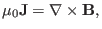
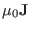
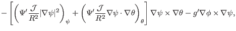

Let us derive the contravariant expression for the current density. Using

along with magnetic field expression (177) and the curl formula
(139), we obtain


(331)
which is the contravariant form of the current density vector. Next, for later
use, calculate the parallel current. By using Eqs. (177) and
(331), the parallel current density is written as